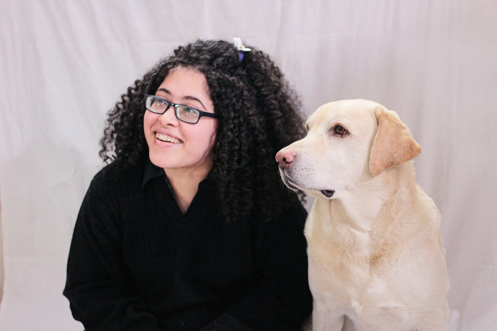
Table 01Rosa Delgado
Owner · Groomer
Grooming since 2014. Takes the nervous dogs and the first-timers, and keeps the patch book.
Houston Heights · Dog grooming since 2017
Baths, haircuts and nail trims by appointment, one dog per groomer and no cages. After every visit your dog gets a patch on their card. Six patches, and the next bath is on us.
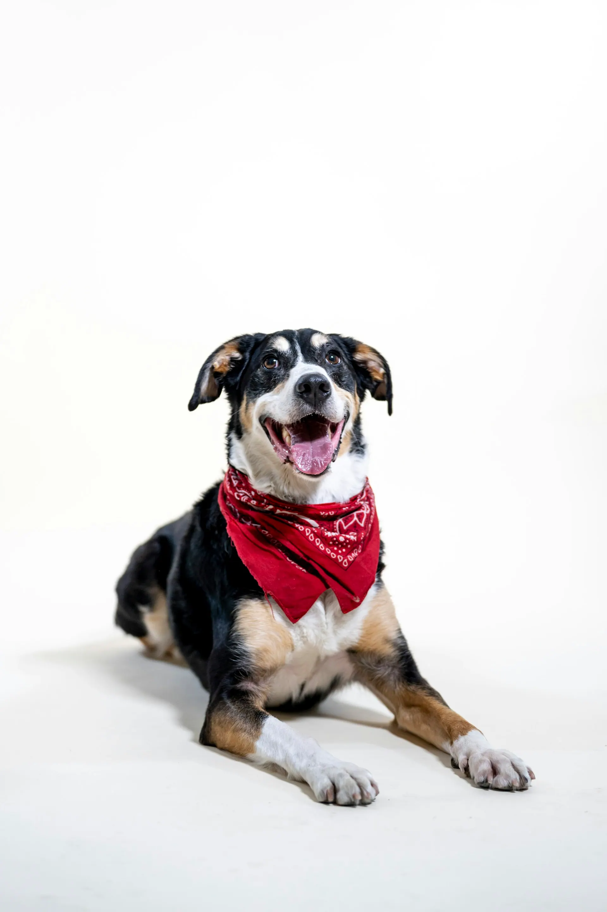

Table 01Owner · Groomer
Grooming since 2014. Takes the nervous dogs and the first-timers, and keeps the patch book.
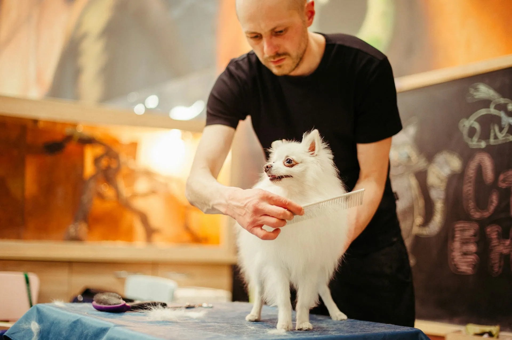
Table 02Groomer · Big dogs
Huskies, shepherds and doodles. Patient with the dryer and the howling.
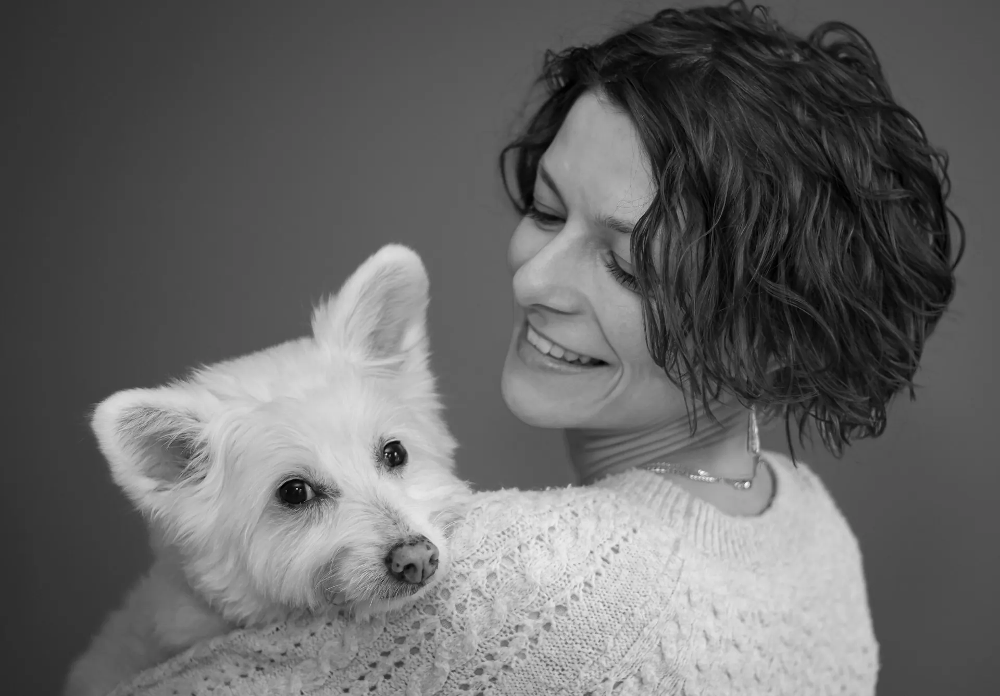
Table 03Groomer · Scissoring
Hand scissoring and small breeds. Shows you a photo before she starts the cut.
Rosa Delgado groomed the neighbors' dogs in her garage on Yale Street for three years before the Heights had a shop like this. The patch card came from her son's scout sash.
Rosa Delgado, owner
Neighbors' dogs, booked by text and paid in cash and, once, in banana bread.
Two tables and no cages. Dogs wait on a leash with a person or in somebody's arms.
Earned the first patch for a nail trim without a fuss. He has 41 now and still pretends to hate the dryer.
Pick a groomer and a time online. We text before pickup so nobody waits outside in the heat.
No waiting in the lobby and no dog left in a crate. We text when your dog is almost done, and you come when it suits you.
Book a groom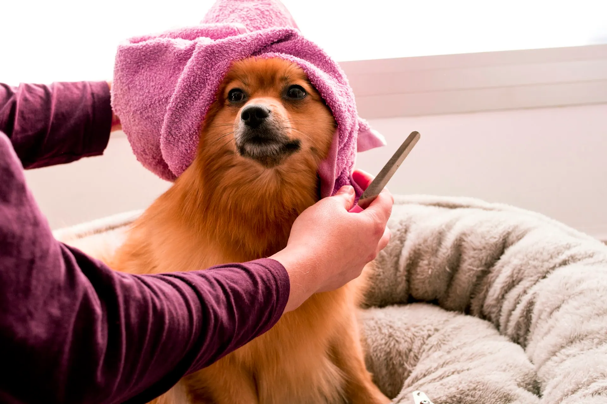
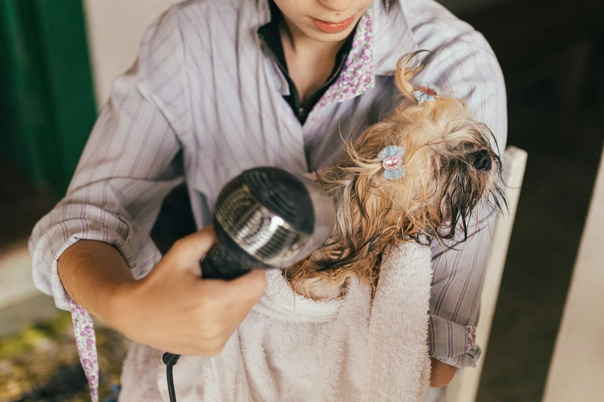
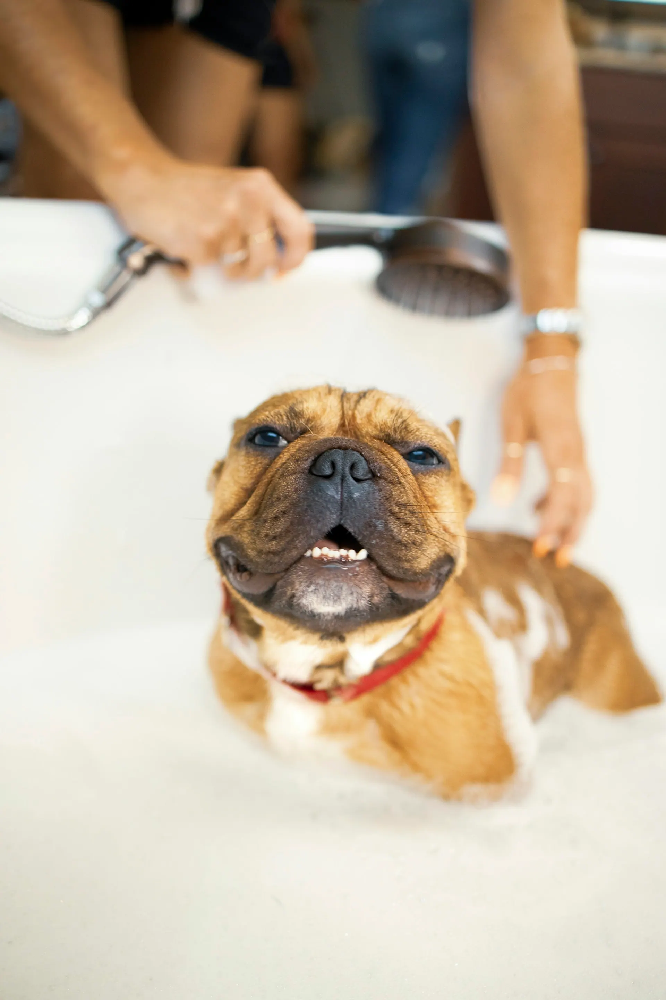
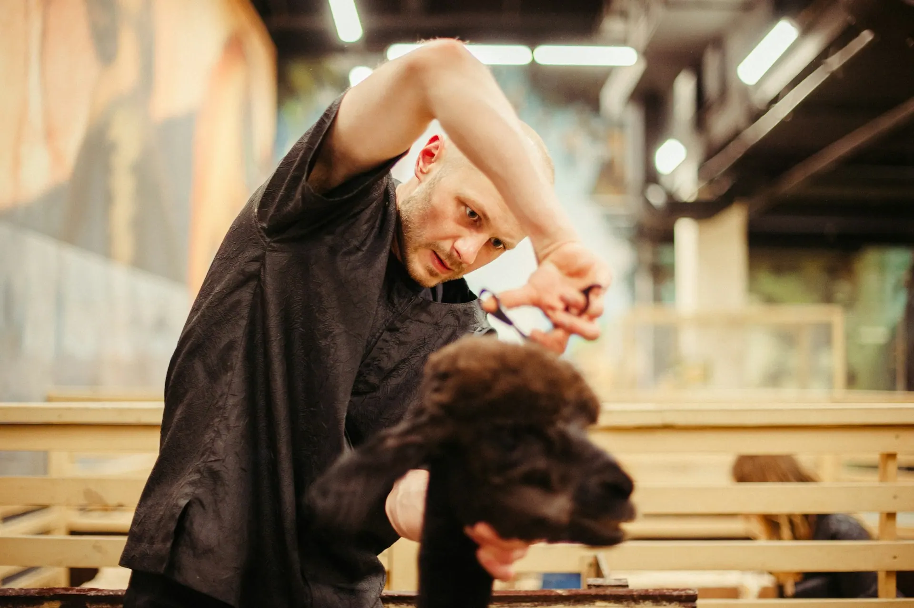
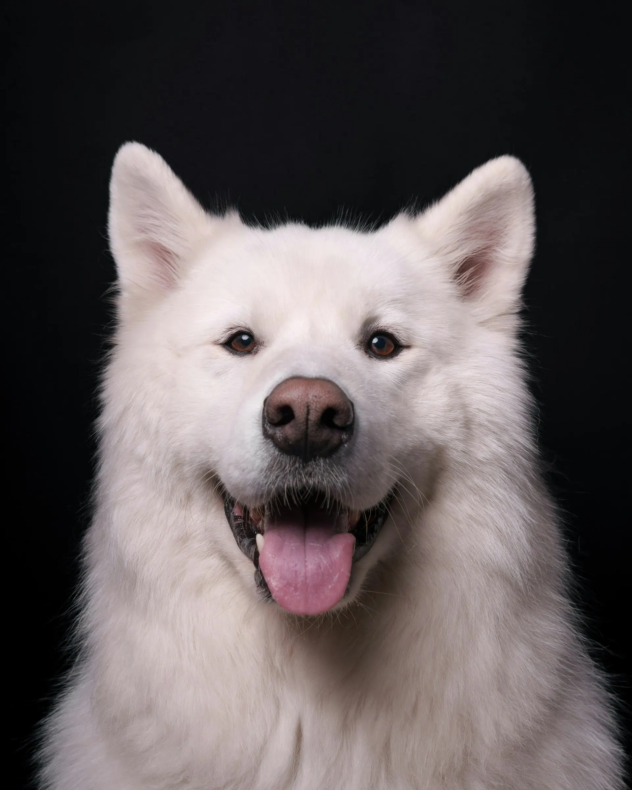
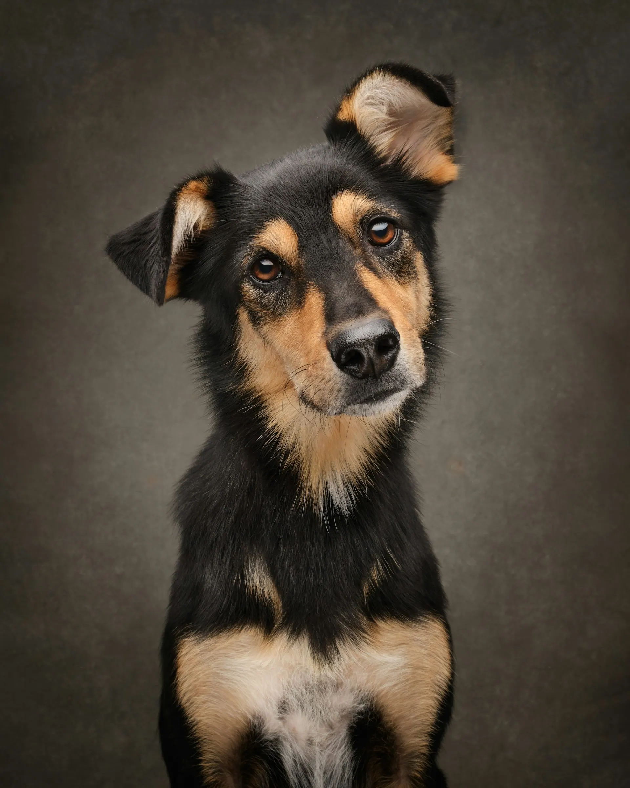
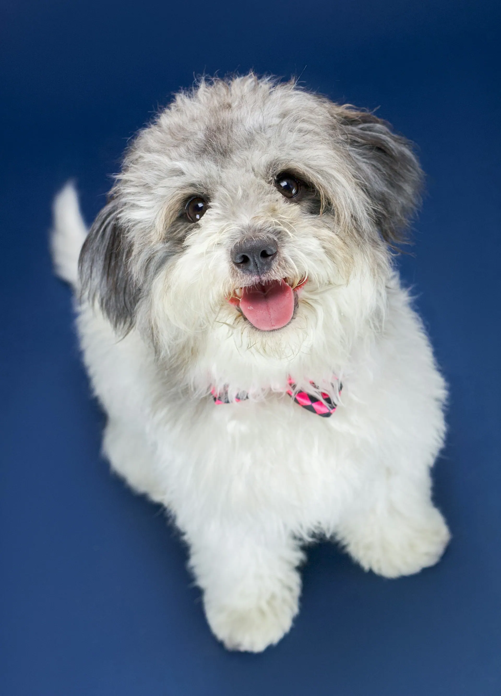
“Our rescue shook through every grooming appointment until Rosa. No cage, no rush, and now he pulls me to the door.”
“The text before pickup is the best part. I walk over from the office and she's ready, bandana and all.”
“My kids keep track of the patches better than I do. Six patches, free bath, everybody's happy.”
First dogs at 8 AM. Late Thursdays for working owners.
2210 Pecan AlleyThree spots in front, marked with paw prints, and street parking on Pecan Alley. Leashes on from the car to the door, please.
| Monday | Closed |
|---|---|
| Tuesday | 8 AM – 5 PM |
| Wednesday | 8 AM – 5 PM |
| Thursday | 8 AM – 6 PM |
| Friday | 8 AM – 5 PM |
| Saturday | 8 AM – 3 PM |
| Sunday | Closed |
No. Dogs are with a groomer, on a leash with someone, or in somebody's arms the whole time. That's why we book one dog per groomer.
Book a Puppy intro or a Tidy Up first, even for an adult dog. Rosa takes those, goes slowly and stops if your dog needs a break.
Current rabies and Bordetella. Text a photo of the certificate before the first visit.
Every visit adds one patch to your dog's card, kept at the front desk. The sixth patch means the next Bath & brush is free.
The entrance is step-free and the lobby has room for a wheelchair. Call ahead and we'll bring your dog out to the car.